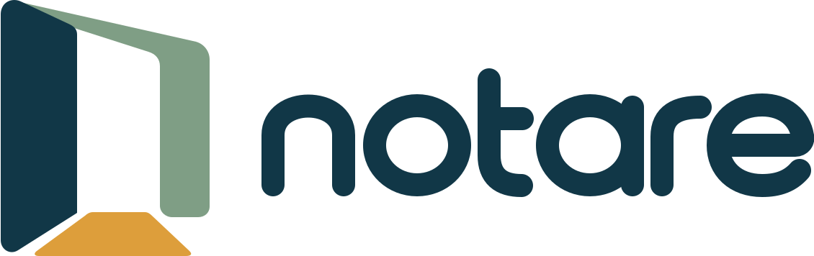

Prioridade hoje—estudantes com atenção alta
Veja quem precisa de atenção e organize as próximas ações.
Sinais reunidos para apoiar a priorização humana da equipe.
| Estudante | Sinais observados | Último registro | Status | Abrir |
|---|
Nenhum estudante encontrado com esses filtros.
8º B · cadastro EST-014
A frequência caiu, há faltas consecutivas e o primeiro contato ainda não teve retorno. A classificação apenas organiza os sinais; a decisão continua com a equipe.
Acompanhe sinais, contatos, devolutivas e planos criados.
Nenhum registro encontrado nesta categoria.
Consulte o cadastro e abra o histórico de cada estudante.
Consulte estudantes, funcionários e turmas da instituição.
Registre somente informações necessárias ao acompanhamento. Evite diagnósticos, julgamentos ou detalhes sensíveis.
Ana Souza · 8º B

Conheça cada etapa da implantação. Avance no seu ritmo.
A identificação da instituição reúne os dados necessários para organizar o ambiente escolar.
A instituição escolhe a unidade, o segmento e o plano antes de configurar a equipe.
A direção importa turmas, estudantes e equipe para preparar o ambiente de acompanhamento.
 +2
+2Os acessos da equipe são individuais e respeitam as responsabilidades de cada função.
As etapas são ilustrativas: não executam contratação, importação ou autenticação.
O preenchimento é automático; você decide quando avançar.
A equipe agora tem uma ação clara, uma pessoa responsável e um prazo para revisar a situação.
O acompanhamento já tem um próximo passo definido.
Conecte o contato com responsáveis ao acompanhamento escolar.
Dados de exemplo, armazenados neste navegador. As ações não enviam mensagens externas nem geram contratos, pagamentos ou repasses.
Converse com a escola e acompanhe os comunicados compartilhados.
Dados de exemplo, armazenados neste navegador. As ações não enviam mensagens externas nem geram contratos, pagamentos ou repasses.
Encontre oportunidades opcionais para sua família.
Dados de exemplo, armazenados neste navegador. As ações não enviam mensagens externas nem geram contratos, pagamentos ou repasses.
Gerencie benefícios e acompanhe apenas suas conversões.
Dados de exemplo, armazenados neste navegador. As ações não enviam mensagens externas nem geram contratos, pagamentos ou repasses.
Consulte o escopo institucional e gerencie a adesão.
Dados de exemplo, armazenados neste navegador. As ações não enviam mensagens externas nem geram contratos, pagamentos ou repasses.
Avalie as ofertas antes de disponibilizá-las às famílias.
Dados de exemplo, armazenados neste navegador. As ações não enviam mensagens externas nem geram contratos, pagamentos ou repasses.